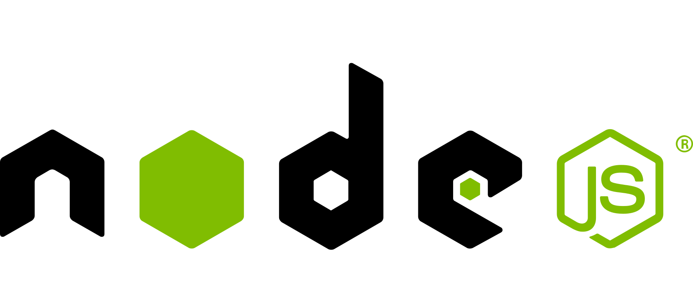
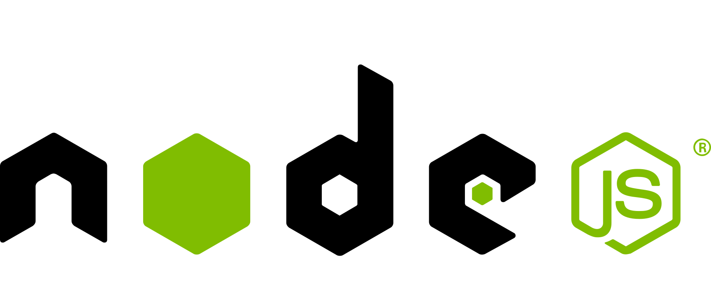

Lee Norris
 724.594.8135
724.594.8135 lee.e.norris@gmail.com
lee.e.norris@gmail.com www.linkedin.com/in/leenorris337
www.linkedin.com/in/leenorris337


 

Objective
To contribute my diligence and creativity in building a professional symbiosis wherein I
may
continuously add value to the organization that enables me to exercise and develop my skills.
Education
Penn State University
B.S. Information Science and Technology
Cumulative GPA: 3.59
Major GPA: 3.98
Technical Summary
UI / Presentation Development
- Angular/JavaScript/jQuery
- ASP.NET MVC / Rails
- HTML5/CSS3
Application Development
- C# / VB.NET
- Ruby
- Java
Database Development
- T-SQL (SQL Server 2005 - 2012)
- Entity Framework and SSDT
- PL/SQL (Oracle 9-11) (novice)
Business Intelligence
- Microsoft Business Intelligence (SSAS/SSIS/SSRS)
- iTextSharp PDF Reports
Work Experience
Application Developer III
Philips Respironics
July 2015 - Present
1001 Murry Ridge Lane, Murrysville, PA 15668
Technologies
- AngularJS 1.4
- NodeJS 4.2.2
- PhantomJS 1.9.8
- AWS CLI
- Cloud Foundry
- Java 8
- Karma/Jasmine
- Grunt
Software
- WebStorm
- IntelliJ
- TeamCity
- GitLab
- Git
- Cloud Foundry CLI
- AWS CLI
- Rally
Client-Facing Web Development of Healthcare Application
- Creating SPA style user interface with Angular 1.4
- Authoring directives, controllers, and services for views
- Defining and implementing UX to meet business requirements and comply with regulations
Building reporting solution for rendering PDF reports programmatically
- Using PhantomJS (1.9.8) to render PDF snapshot of web application’s rendered HTML
- Authoring NodeJS (4.2.2) components for server side infrastructure (routing, controlling Phantom, pushing to S3)
- Administering AWS EC2 instances for load testing and deployment (autoscaling & load-balancing instances)
Back-End Web Development
- Light backend development with Java 8 to create REST controllers
Agile Development
- Contributing to continuous build cycle
- Participating in sprints and daily stand-ups
- Working on user stories and defects
- Prototyping and iterating on designs
Software Engineer
UPMC TDC
June 2014 - July 2015
6425 Penn Ave, Pittsburgh, PA
Technologies
- Angular 1.3
- Rails 3
- Jade / HAML
- Karma/Jasmine
Software
- Software
- Jira
- RubyMine 5
- Git
- Phabricator
- Oracle SQL Developer
- Jenkins
- Rally
- Oracle VirtualBox VM
- Node Package Manager
- Bower Package Manager
- Grunt
- Jasmine / Karma / Protractor
Front-End Web Development on MyUPMC (A client-facing web app for UPMC patients and doctors)
- Creating SPA-style user interfaces with the Angular framework (v1.3) and authoring directives, services, filters, forms, etc.
- Using SASS to precompile CSS and implement mobile-first responsive design
- Precompiling HTML views and authoring reusable view components with Jade
- Writing and running unit tests with Jasmine and Karma
- Automating tasks with GruntJS
Back-End Web Development
- Authoring Ruby (Rails 3) controllers and models to provide an API for the front end
- Validating and persisting user input
- Verifying and consuming web services
- Writing and running unit tests with RSpec
Agile Development
- Contributing to continuous build cycle
- Participating in sprints and daily stand-ups
- Working on user stories and defects
Programmer/Analyst
Giant Eagle, Inc.
April 2012 – June 2014
575 Epsilon Drive, Pittsburgh, PA
Technologies
- C# 3.5 to 4.5
- ASP.NET MVC 3
- SSRS/SSAS/SSIS
- Oracle 11
- Entity Framework 5
Software
- Visual Studio 2005/2008/2010/2012
- SQL Server Management Studio 2012
- Oracle SQL Developer
- Toad for Oracle
- TortoiseSVN (Apache Subversion source control client for Windows)
- Winmerge
- Putty (Telnet and SSH client used to login to Linux from Windows)
- Automic / UC4 (Enterprise scheduling tool)
- AutoSys (Enterprise scheduling tool)
- Internet Information Services (IIS) 7.0
- CitrixReceiver
Analysis, Design and Documentation
- Defining requirements by interviewing users and analyzing systems/applications
- Identifying potential optimizations within existing business processes that can be realized via system/application enhancements
- Architecting layers of new applications to provide optimal maintainability and extensibility
- Documenting user requirements, developer assumptions, and effort estimations for project work or ad hoc maintenance and enhancements
- Documenting system architecture, database design, data flow, and processes
System Implementation
- Implementing business logic and infrastructural concerns in C# (.NET 2.0 through .NET 4.5)
- Linq (lambdas, funcs, delegates, actions)
- Async/Await (light use)
- Reflection
- MS Test Suite
- Deploying code to development and productions environments via in-house-developed build-server and through Visual Studio (SSAS/SSIS)
Web Development
- Creating responsive HTML5 user interfaces with AJAX (XML and JSON)
- Implementing client-side validation with JavaScript/jQuery
- Styling pages and controls with CSS and jQuery UI
- Enhancing/maintaining existing ASP.NET web forms apps
- Using .NET WebAPI to simulate third party application for testing
System Integration
- Implementing new interfaces between existing systems via direct SQL updates, file transfers, XML exchanges, and HTTP-Posts
- Modifying existing interfaces to support changing business needs
Database Development
- Creating and running DML/DDL database scripts against Oracle and SQL Server
- Designing and implementing databases to 3NF (third normal form)
- Creating stored procedures (T-SQL) to perform complex, multi-table inserts/updates
- Creating PL/SQL functions to promote DRYer reports and increase power-user productivity
- Leveraging/maintaining in-house-developed .NET object-relational-mapping (ORM) assemblies
- Working with Entity Framework 6 (primarily the "code-last" flavor) to read-from/write-to existing databases
Level III Application Support
- Taking support calls off-hours for logistics application support
- Resolving issues with vendor-sourced systems as well as in-house-developed applications
- Determining root causes of system bugs and employing appropriate fix
Business Intelligence Development
- SQL Server Integration Services (SSIS)
- Performing ETL operations on relational databases
- Dynamically creating partitions on existing tabular cubes from relation database sources
- Performing basic table maintenance operations on relation databases such as purging
- SQL Server Analysis Services (SSAS)
- Performing ETL operations to create tabular cubes for reporting
- Dynamically creating new tabular cube partitions based on variable date parameters such as calendar months
- SQL Server Reporting Services (SSRS)
- Creating/maintaining reports that run against Oracle and SQL Server with SQL Server Reporting Services (SSRS) 2005/2012
- Connecting SSRS reports via drill-through links, which enable a “details-view” of the data displayed in summary reports
- Converting Cognos or Crystal reports to SSRS
- Embedding VB.NET code in SSRS reports to enable complex data manipulations or formatting
Junior ASP.NET Developer
Information Age Technologies
March 2011 – March 2012
220 Bessemer Road, Mount Pleasant, PA
Technologies
- C# 2.0 to 4.5
- ASP.NET
- VB.NET
- SQL Server
Software
- TFS – Team Foundation Server
- Visual Studio 2008/2010
- SQL Server Management Studio
- Rumba Data Access Client (Terminal Emulator for IBM DB2)
- Bomgar
- TechInline
- GoToMyPC
- Internet Information Services (IIS) 7.0
- CitrixReceiver
Desktop Web Development and Support for Copilot (Proprietary ASP.NET web application with SQL Server 2008 R2 backend)
User Experience Design and Development
- Determining the content to show on each page
- Planning content layout and color schemes
- Mapping out the state transition between pages
- Ensuring that the finished product looks smooth and professional
Business Logic Development
- Designing and implementing business objects and processes as classes and methods
System Analysis and Design
- Interviewing users to define system requirements for enhancements
- Creating user interface prototypes and getting user feedback (similar to Agile approach)
Software Testing
- Debugging JavaScript, C# application code, and database SQL / T-SQL
Software Support
- On-site and phone support in English and Spanish
- Determining root causes of system bugs and employing appropriate fix
Mobile/Desktop Web Development for Client Site (Two ASP.NET web applications with WCF service layer and IBM DB2 backend)
Database Development
- Testing quality and structure of DB2 tables (files) via SQL queries
- Writing queries against client’s DB2 database
- Using ASNA DataGate middleware as connective tissue between DB2 and .NET
- Performance tuning queries
- Creating PDF reports with iTextSharp
- Writing queries to insert/update IBM DB2 database records based on user interactions inside the browser
Service Layer Implementation
- Exposing .NET business logic via Windows Communication Foundation (WCF) services
- Consuming WCF services in ASP.NET web forms applications
Business Logic Development
- Designing and implementing business objects and processes as classes and methods
- Exposing business logic via a WCF (Windows Communication Foundation) service layer
Software Testing
- Cross-browser testing of mobile site
Area Agency on Aging (AAA) Social Assistance Management Software (SAMS) Support (Contract)
- Answering users’ technical questions regarding software use and government policies
- Manipulating data as a Social Assistance Management Software (SAMS) administrator
- Documenting and explaining application utilization best practices
- Complying with government privacy and security policies regarding user data
- Writing ad hoc reports for organizational supervisors or governmental/regional meetings
- Resolve web/phone tickets coming into the Allegheny County AAA Social Assistance Management Software (SAMS) Support Portal